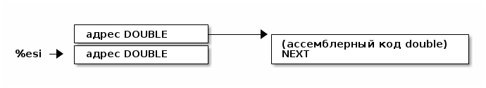
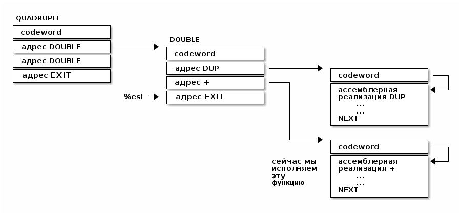
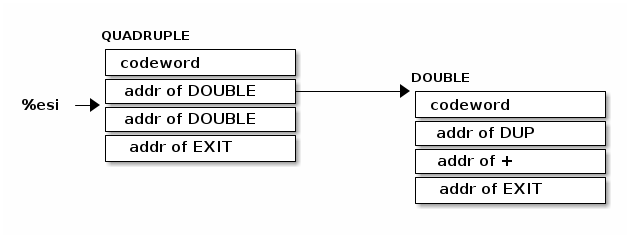
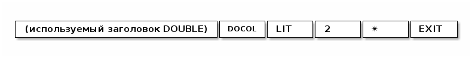
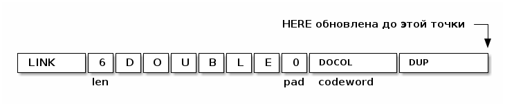
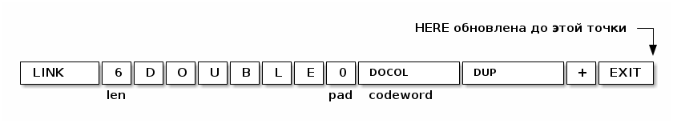
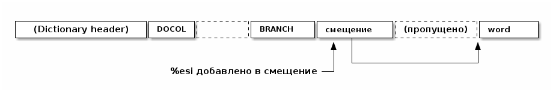

Table of Contents
- Внутреннее устройство Forth-машины
- Словарь
- Прямой шитый код
- Коссвенный шитый код
- Интерпретатор и стек возвратов
- Начинаем работу
- Встроенные слова
- Cmdline слова
- Env слова
- EXIT - Возвращение из форт-слов
- Литералы
- Память
- Встроенные переменные
- Встроенные константы
- Стек возвратов
- Стек данных
- Ввод и вывод: KEY EMIT WORD NUMBER
- Просмотр словаря
- Компиляция
- Расширение компилятора
- Ветвление
- Строковые литералы - LITSTRING
- Печать строки - TELL
- QUIT
- INTERPRET
- CHAR
- EXECUTE
- DODOES
- Системные вызовы
- Сегмент стека и буффер ввода
- Tangling
- Trobleshooting
Внутреннее устройство Forth-машины
Словарь
В Forth, как вы уже знаете, функции называются "словами", и, так же, как и в других
языках программирования, у них есть имя и определение. Вот два слова Forth:
: DOUBLE DUP + ; \ имя: "DOUBLE" определение: "DUP +" : QUADRUPLE DOUBLE DOUBLE ; \ имя: "QUADRUPLE" определение: "DOUBLE DOUBLE"
Слова, как встроенные, так и те, которые программист определяет позже, хранятся в словаре, который является связным списком записей словаря.

Мы дойдем до определения слова позже. Сейчас просто посмотрите на его заголовок
(dictionary entry / header). Первые 4 байта - это LINK-указатель. Он указывает на
предыдущее слово в словаре, и для первого слова в словаре является указателем
NULL. Затем идет байт LENGTH/FLAGS. Длина слова может составлять до 31 символа
(используется 5 бит), а три верхних бита используются для различных флагов, про которые
я расскажу позже. За этим следует само имя, и в этой реализации имя всегда кратно 4
байтам, и первоначально заполнено нулевыми байтами. Кратность нужна просто для того,
чтобы определение начиналось с 32-битной границы - такого рода выравнивание важно для
быстродействия.
Переменная Forth, называемая LATEST, содержит указатель на последнее заданное слово,
другими словами, голову этого связанного списка.
DOUBLE и QUADRUPLE могут выглядеть так::
Вы должны увидеть из этого, как можно реализовать поиск слова в словаре (просто пройти по записям, начинающимся с той, на которую указывает LATEST, и сопоставляя имена, пока вы не найдете совпадение или не наткнетесь на указатель NULL в конце словаря).
И как добавить слово в словарь (создать новое определение, установить его LINK в LATEST и установить LATEST, чтобы он указывал на новое слово). Мы увидим именно эти функции, реализованные на ассемблере позже.
Одним из интересных последствий использования связанного списка является то, что вы можете переопределять слова, и более новое определение слова переопределяет более старое. Это важная концепция в Forth, потому что это означает, что любое слово (даже "встроенные" или "стандартные" слова) могут быть переопределены новым определением, либо для его улучшения, либо для его ускорения или даже для его отключения. Однако из-за того, как компилируются слова Forth, слова, определенные с использованием старого определения слова, продолжают использовать старое определение. Только новые слова, определенные после нового определения, используют новое определение.
Прямой шитый код
Теперь мы перейдем к действительно важному, для понимания Forth, аспекту. Если вы не поймете этот раздел, то вы не поймете как работает Forth, и это будет неудачей с моей стороны.
Давайте поговорим сначала о том, что означает "шитый код". Представьте себе своеобразную версию Cи, где вам разрешено вызывать только функции без аргументов. (Не беспокойтесь, о том, что такой язык будет совершенно бесполезен) Итак, в нашем своеобразном Cи код будет выглядеть так:
f () {
a ();
b ();
c ();
}
…и так далее. Как бы функция, скажем, f выше, была скомпилирована стандартным
компилятором Cи в машинный код? Например для i386 так:
f:
CALL a # E8 08 00 00 00
CALL b # E8 1C 00 00 00
CALL c # E8 2C 00 00 00
;; сейчас мы пока игнорируем возврат из функции
E8 - это машинный код x86 для «CALL» функции. В первые 20 лет компьютерная память
была ужасно дорогой, и мы могли бы беспокоиться о том, что расходуем впустую
память повторенными байтами «E8». Мы можем сэкономить 20% в размере кода (и,
следовательно, дорогостоящей памяти), сжав это:
08 00 00 00 # Просто адреса функций, без CALL 1C 00 00 00 2C 00 00 00
На 16-битной машине, подобной той, на которой Forth был запущен в первый раз, экономия еще больше - 33%.
Историческое примечание: Если модель исполнения, используемая Forth, кажется странной, то она была полностью мотивирована необходимостью экономить память на ранних компьютерах. Это сжатие не так важно сейчас, когда наши машины имеют больше памяти в своих кэшах L1, чем в ранних компьютерах, но модель исполнения по-прежнему обладает некоторыми полезными свойствами. Кроме того, на современных процессорах, Forth-система способна целиком поместиться в кэше процессора, что делает ее прямо таки чудовищно быстрой.
Конечно, этот сжатый код, из которого убраны E8, больше не будет работать
непосредственно на процессоре. Вместо этого нам нужно написать интерпретатор, который
берет каждый адрес и вызывает его.
На машине i386 получается, что этот интерпретатор можно легко написать в двух
ассемблерных инструкциях, которые превращаются всего в 3 байта машинного кода. Давайте
сохраним в регистре %esi указатель на следующее слово для выполнения:

В i386 есть инструкция LODSL (или в терминологии руководств Intel, LODSW). Она
делает две вещи:
- читает из памяти, на которую указывает
%esi4 байта в регистр%eax - увеличивает значение в регистре
%esiна 4
Итак, после выполнения инструкции LODSL ситуация выглядит так:

Сейчас нам надо сделать jmp на адрес, содержащийся в %eax. Это снова всего одна
x86-инструкция, которая записывается как JMP *(%eax). И после того как мы сделаем JMP
ситуация выглядит так:
Для выполнения этой работы каждая подпрограмма сопровождается двумя инструкциями:
LODSL; JMP *(%eax), которые буквально переходят к следующей подпрограмме.
И это подводит нас к нашей первой части реального кода! Ну, то есть, это макрос.
.macro NEXT
lodsl
jmp *(%eax)
.endm
Этот макрос называется NEXT. Он раскрывается в эти две инструкции.
Каждый примитив Forth, который мы пишем, должен быть завершен NEXT. Думайте об
этом как о return.
Все, что описано выше, называется прямым шитым кодом.
Подводя итог: мы сжимаем наши вызовы функций до списка адресов и используем макрос,
чтобы переходить к следующей функции в списке. Мы также используем один регистр
(%esi), как своего рода указатель инструкции (Instruction Pointer), указывающий на
следующую функцию в списке.
Я просто дам вам намек на то, что должно произойти, сказав, что определение Forth, такое как:
: QUADRUPLE DOUBLE DOUBLE ; \ имя: "QUADRUPLE" определение: "DOUBLE DOUBLE"
на самом деле компилирует (не совсем точно, но мы сразу увидим, почему) список адресов функций для DOUBLE, DOUBLE и специальную функцию EXIT для завершения.
На данный момент, остроглазые эксперты ассемблера могут воскликнуть: "вы сделали ошибку!".
Ага, я лгал вам о JMP *(%eax).
Коссвенный шитый код
Оказывается, что прямой шитый код интересен, только если вы хотите просто выполнить
список функций, написанных на ассемблере. Поэтому QUADRUPLE будет работать только в том
случае, если DOUBLE является функцией языка ассемблера. В прямом шитом коде QUADRUPLE
будет выглядеть так:

Мы можем добавить дополнительный уровень косвенности, позволяющей нам запускать как слова, написанные на ассемблере (примитивы, написанные для скорости), так и слова, написанные на Forth-е, как списки адресов.
Дополнительная косвенность является причиной скобок в JMP *(%eax).
Давайте посмотрим, как QUADRUPLE и DOUBLE действительно выглядят в Forth:
Это та часть, где вам может понадобиться дополнительная чашка кофе. Что изменилось, так
это то, что я добавил дополнительный указатель на начало определения. В Forth это
называют codeword - кодовое слово. codeword является указателем на интерпретатор
для запуска функции. Для примитивов, написанных на языке ассемблера, codeword просто
указывает на сам код - его не нужно интерпретировать, он просто запускается.
В словах, написанных на Forth (например, QUADRUPLE и DOUBLE), codeword указывает на
функцию-интерпретатор.
Я вскоре покажу вам функцию-интерпретатор, но давайте вспомним наш косвенный JMP
*(%eax) с "дополнительными" скобками. Возьмем случай, когда мы выполняем DOUBLE, как
показано, и вызывается DUP. Обратите внимание, что %esi указывает на адрес +
Ассемблерный код для DUP в конце делает NEXT. Это:
- читает адрес
+в%eax- теперь%eaxуказывает наcodewordдля кода+ - увеличивает
%esiна 4 - выполняет
jmpна содержимое того адреса, который лежит в%eax→ т.е.jmpпо адресу, лежащему вcodewordслова+, → т.е.jmpна ассемблерный код, реализующий+.

Поэтому я надеюсь, что я убедил вас, что NEXT делает примерно то, что вы
ожидаете. Это коссвенный шитый код.
Обратите особенное внимание, что на рисунках "адрес DOUBLE" следует читать как "адрес поля codeword слова DOUBLE". Такое длинное описание просто не вмещается в рисунок, поэтому мне пришлось сократить. Однако я сейчас приведу "увеличенный фрагмент", чтобы избежать возможной путаницы:
Я не сказал о четырех вещах. Интересно, сможете ли вы догадаться о них, не читая дальше?
Вот список этих вещей:
- что делает
EXIT? - как происходит вызов функции, т.е. как
%esiначинает указывать на часть QUADRUPLE, а затем указывать на часть DOUBLE? - Что входит в
codewordдля слов, написанных на Forth? - Как компилировать функцию, которая делает что-то еще, кроме вызова других функций,
например функцию, которая содержит число, такую как
: DOUBLE 2 * ;?
Интерпретатор и стек возвратов
Не останавливаясь на этом, давайте поговорим о третьей и второй проблемах, интерпретаторе и стеке возврата.
Слова, которые определены в Forth, нуждаются в codeword, указателе, указывающем на
небольшое количество кода, который протягивает им "руку помощи". Им не нужно много, но
им нужно то, что известно как интерпретатор, хотя на самом деле он не является
интерпретатором в том же смысле, как, например, медленный интерпретатор байт-кода
Java. Этот интерпретатор просто устанавливает несколько машинных регистров, чтобы затем
слово могло выполняться на полной скорости с использованием модели коссвенного шитого
кода, показанной выше.
Одна из вещей, которые должны произойти, когда QUADRUPLE вызывает DOUBLE, заключается в
том, что мы сохраняем старый указатель инструкций %esi и создаем новый, указывающий
на первое слово в DOUBLE. Поскольку нам нужно будет восстановить старый %esi в конце
слова DOUBLE (в конце концов, это как вызов функции), нам понадобится стек для хранения
этих "адресов возврата" (старых значений %esi).
Как вы, наверно видели в документации, Forth имеет два стека: обычный стек параметров
и немного загадочный стек возвратов. Но наш стек возвратов - это просто тот стек, о
котором я говорил в предыдущем абзаце, используемый для сохранения %esi когда из
одного слова Forth вызывается другое слово Forth.
В нашем Forth в качестве стека параметров мы будем использовать аппаратный стек с
регистром-указателем %esp. А для стека возвратов мы будем использовать другой
регистр-указатель стека i386 (%ebp, называемый "указателем фрейма").
У меня есть два макроса, которые просто оборачивают детали использования %ebp для
стека возвратов. Вы используете их так: PUSHRSP %eax (push %eax в стек возвратов)
или POPRSP %ebx (pop значение, на которое указывает вершина стека возвратов %ebp в
регистр %ebx).
.macro PUSHRSP reg
lea -4(%ebp), %ebp # декремент %ebp на 4
movl \reg, (%ebp) # push reg в стек возвратов
.endm
.macro POPRSP reg
mov (%ebp), \reg # pop вершину стека возвратов в reg
lea 4(%ebp), %ebp # инкремент %ebp на 4
.endm
Область, идущая сразу за codeword в слове называется param-field. Если слово
является примитивом (т.е. его исполняемый код написан на ассемблере), то за codeword,
прямо в param-field будет идти ассемблерный код слова, и codeword будет указывать
на него.
Если же слово не примитив, т.е. соcтоит из вызовов других слов, то param-field будет
содержать указатели на codeword-ы этих слов. У такого слова codeword будет
указателем на DOCOL, о котором сейчас пойдет речь.
В Forth функция-интерпретатор часто называется DOCOL (я думаю, что это означает "DO
COLON", потому что все определения Forth начинаются с двоеточия, как например в
выражении : DOUBLE DUP ;
Интерпретатору (на самом деле это не "интерпретация") нужно push-нуть старый %esi в
стек возвратов и установить %esi так, чтобы он указывал на первое слово в
определении. Помните, как мы перешли к функции с помощью JMP *(%eax)? Вследствие
этого удобно, что %eax содержит адрес этого codeword, поэтому просто добавляя к
нему 4, мы получаем адрес первого слова идущего за codeword.
Наконец, после установки %esi, он просто делает NEXT, который вызывает запуск первого
слова. Удобно, что в архитектуре i386 можно одной командой увеличить %EAX на 4 и
послать результат в %ESI. Таким образом, определение DOCOL будет выглядеть так:
.text
.align 4
DOCOL:
PUSHRSP %esi # Сохранить %esi в стеке возвратов
leal 4(%eax), %esi # %esi теперь указывает на param-field
NEXT # Делаем NEXT
Чтобы это было совершенно ясно, посмотрим, как работает DOCOL при прыжке с QUADRUPLE в DOUBLE:
Во-первых, вызов DOUBLE вызывает DOCOL (codeword DOUBLE). DOCOL делает следующее:
он push-ит старый %esi на стек возвратов. %eax указывает на codeword DOUBLE,
поэтому мы просто добавляем к нему 4, чтобы получить наш новый %esi:

Затем он делает NEXT и из-за магии шитого кода (копирование текущего адреса из %esi в %eax, вызов его из %eax и увеличения %esi) вызывается DUP.
Здесь есть одна второстепенная вещь. Поскольку DOCOL - это первый кусок ассемблерного
кода, который должен быть определен в этом файле (остальные - только макросы), и
поскольку я обычно (но не в этом случае) компилирую этот код с сегментом .text,
начинающимся с адреса 0, DOCOL имеет адрес 0. Поэтому, если вы дизассемблируете код и
увидите слово с codeword 0, вы сразу же поймете, что это слово Forth (а не
ассемблерный примитив), и поэтому оно использует DOCOL в качестве интерпретатора.
К сожалению, это не сработает в современных дистрибутивах Linux, где блокируеются
попытки доступа к младшим адресам памяти. За это отвечает параметр
CONFIG_DEFAULT_MMAP_MIN_ADDR и на моей системе вызов cat /proc/sys/vm/mmap_min_addr
возвращает 65536. Можно изменить опции линкера на "-Wl,-Ttext,10000" (адрес надо
задавать шестнадцатиричным значением). Но так как я компилирую в обычный исполняемый
файл ELF для Linux, статически слинкованный с библиотекой Си (которая нам понадобится
для разных практических целей) при дизассемблировании придется запомнить адрес DOCOL.
Начинаем работу
Теперь давайте перейдем к гайкам и болтам. Когда мы запускаем программу, нам нужно настроить несколько вещей, таких как стек возвратов. Но как только мы сможем, мы хотим перейти в код Forth (хотя большая часть «раннего» кода Forth все равно должна быть написана как примитивы на host-языке).
Это то, что делает код настройки:
- Делает небольшую вступительную часть - сбрасывает флаг направления DF.
- Настраивает отдельный стек возврата (NB: Linux уже дает нам обычный стек параметров)
- затем сразу переходит к слову Forth, называемому QUIT. Несмотря на свое название QUIT никуда не выходит. Он сбрасывает стек возвратов и начинает чтение и интерпретацию команд. (Причина, по которой он называется QUIT, заключается в том, что вы можете вызывать QUIT из вашего собственного кода Forth, чтобы «выйти» из вашей программы и вернуться к вводу и интерпретации команд).
Здесь мы настраиваем указатель HERE на начало области данных data_buffer, который я
выделил в сегменте .bcc. Так проще, нежели пытаться определять и расширять data
segment с помощью системного вызова brk(2), который у меня возвращает -1.
Мы используем обычный стек процесса (на который указывает регистр %esp) в качестве стека параметров, потому что операции с этим стеком - самые частые в Forth-программе, а команды работы со стеком процесса быстрее и короче. Стек возвратов используется Forth-программой реже, поэтому мы адресуемся к нему через регистр %ebp
/* Assembler entry point. */
.data
.align 4
.globl forth_asm_argc
forth_asm_argc:
.int 0 # Количество параметров командной строки
.align 4
.globl forth_asm_argv
forth_asm_argv:
.int 0 # Указатель на параметры командной строки
.text
.globl forth_asm_start
.type forth_asm_start, @function
forth_asm_start:
# Сбрасываем флаг направления
cld
# Записываем вершину стека параметров %esp в переменную S0
mov %esp, (var_S0)
# Устанавливаем стек возвратов %ebp
mov $return_stack_top, %ebp
# Устанавливаем указатель HERE на начало области данных.
mov $data_buffer, %eax
mov %eax, (var_HERE)
# Инициализируем IP
mov $cold_start, %esi
# Запускаем интерпретатор
NEXT
.section .rodata
cold_start: # High-level code without a codeword.
.int QUIT
Встроенные слова
Помните наши словарные записи? Давайте приведем их вместе с codeword и param-field,
чтобы увидеть, как
: DOUBLE DUP ;
действительно выглядит в памяти.
Мы хотим формировать свои первые слова байт за байтом прямо внутри этого файла чтобы, когда этот файл будет скомпилирован, у нас был минимальный набор слов.

Вначале мы не можем просто написать буквально : DOUBLE DUP ; , потому что нам еще пока
нечем читать строку, разбивать ее на слова, анализировать каждое слово и.т.д. Поэтому
вместо этого нам придется определять встроенные слова, используя конструкторы данных
ассемблера GNU (например, .int, .byte, .string, .ascii и.т.д.)
.int <указатель на предыдущее слово>
.byte 6 # len
.ascii "DOUBLE" # name
.byte 0 # padding
DOUBLE:
.int DOCOL # codeword
.int DUP # указатель на codeword DUP
.int PLUS # указатель на codeword +
.int EXIT # указатель на codeword EXIT
Но это быстро утомляет, поэтому я определяю ассемблерный макрос, чтобы я мог просто написать:
defword "DOUBLE",6,,DOUBLE
.int DUP,PLUS,EXIT
и получить точно такой же эффект. Мы определим здесь значение флагов, реализацию которых обсудим несколько позже.
.set F_IMMED,0x80 .set F_HIDDEN,0x20 .set F_LENMASK,0x1f # length mask
А вот и наш макрос defword:
.set link,0 # Инициализировать начальное значение
# переменной времени компиляции link
.macro defword name, namelen, flags=0, label
.section .rodata
.align 4
.globl name_\label
name_\label :
.int link # link
.set link,name_\label
.byte \flags+\namelen # flags + байт длины
.ascii "\name" # имя
.align 4 # выравнивание на 4-х байтовую границу
.globl \label
\label :
.int DOCOL # codeword - указатель на функцию-интепретатор
# дальше будут идти указатели на слова
.endm
Этим способом я хочу писать высокоуровневые слова, написанные с использованием ассемблера (как инструмента). Мы должны написать некоторое количество базового кода, прежде чем будет достаточно инфраструктуры, чтобы начать писать слова на Forth, но также я хочу определить некоторые общие слова на ассемблере для скорости, хотя я мог бы написать их на Forth.
Сейчас этим и займемся. Для начала, рассмотрим, как DUP выглядит в памяти:

Опять же, для краткости я собираюсь написать макрос ассемблера с именем defcode.
.macro defcode name, namelen, flags=0, label
.section .rodata
.align 4
.globl name_\label
name_\label :
.int link # link
.set link,name_\label
.byte \flags+\namelen # flags + байт длины
.ascii "\name" # имя
.align 4 # выравнивание на 4-х байтовую границу
.globl \label
\label :
.int code_\label # codeword
.text
//.align 4
.globl code_\label
code_\label :
# далее следует ассемблерный код
.endm
Теперь несколько простых примитивов Forth. Они написаны на ассемблере для скорости.
defcode "DROP",4,,DROP
popl %eax # сбросить верхний элемент стека
NEXT
defcode "SWAP",4,,SWAP
popl %eax # поменять местами два верхних элемента на стеке
popl %ebx
pushl %eax
pushl %ebx
NEXT
defcode "DUP",3,,DUP
mov (%esp), %eax # дублировать верхний элемент стека
pushl %eax
NEXT
defcode "OVER",4,,OVER
mov 4(%esp), %eax # взять второй от верха элемент стека
pushl %eax # и положить его копию сверху
NEXT
defcode "ROT",3,,ROT
popl %eax
popl %ebx
popl %ecx
pushl %ebx
pushl %eax
pushl %ecx
NEXT
defcode "-ROT",4,,NROT
popl %eax
popl %ebx
popl %ecx
pushl %eax
pushl %ecx
pushl %ebx
NEXT
defcode "2DROP",5,,TWODROP
popl %eax # сбросить два верхних элемента со стека
popl %eax
NEXT
defcode "2DUP",4,,TWODUP
movl (%esp), %eax # дублировать два верхних элемента на стеке
movl 4(%esp), %ebx
pushl %ebx
pushl %eax
NEXT
defcode "2SWAP",5,,TWOSWAP
popl %eax # поменять местами две пары элементов на стеке
popl %ebx
popl %ecx
popl %edx
pushl %ebx
pushl %eax
pushl %edx
pushl %ecx
NEXT
defcode "?DUP",4,,QDUP
movl (%esp), %eax # дублировать верхний элемент стека если он не нулевой
test %eax, %eax
jz 1f
pushl %eax
1:
NEXT
defcode "1+",2,,INCR
incl (%esp) # увеличить верхний элемент стека на единицу
NEXT
defcode "1-",2,,DECR
decl (%esp) # уменьшить верхний элемент стека на единицу
NEXT
defcode "4+",2,,INCR4
addl $4, (%esp) # увеличить верхний элемент стека на 4
NEXT
defcode "4-",2,,DECR4
subl $4, (%esp) # уменьшить верхний элемент стека на 4
NEXT
defcode "+",1,,ADD
popl %eax # взять верхний элемент со стека
addl %eax, (%esp) # прибавиь его значение к элементу, который стал верхним
NEXT
defcode "-",1,,SUB
popl %eax # взять верхний элемент со стека
subl %eax, (%esp) # вычесть его значение из элемента, который стал верхним верхним
NEXT
defcode "*",1,,MUL
popl %eax # взять со стека верхний элемент
popl %ebx # взять со стека следующий верхний элемент
imull %ebx, %eax # умножить их друг на друга
pushl %eax # игнорируем переполнение
NEXT
В этом Forth только /MOD примитив. Позже мы определим слова / и MOD в терминах
примитива /MOD. Конструкция ассемблерной команды idiv, которая оставляет как частное,
так и остаток, делает этот выбор очевидным.
defcode "/MOD",4,,DIVMOD
pop %ebx
pop %eax
cdq
idivl %ebx
pushl %edx # push остаток
pushl %eax # push частное
NEXT
defcode "U/MOD",5,,UDIVMOD
xor %edx, %edx
pop %ebx
pop %eax
divl %ebx
push %edx # push остаток
push %eax # push частное
NEXT
Множество сравнительных операций, таких как =, <, >, и.т.д
Стандарт ANSI Forth говорит, что слова сравнения должны возвращать все двоичные разряды
равные единице для TRUE, и все двоичные разряды равные нулю для FALSE. Для
программистов на языке Си это немного странное соглашение, поэтому этот Forth не
следует ему и возвращает более нормальное (для программистов на Си) значение 1 для
TRUE и 0 для FALSE.
Причиной этого соглашения является то, что при его использовании слова AND, OR, XOR и
INVERT могут функционировать одновременно как логические операторы, так и как побитовые
операторы. Для сравнения, если использовать соглашение языка Си, что FALSE = 0 и TRUE =
1, вам нужны два набора операторов: && и &, || и |, и.т.д.
В будущем я планирую приблизить этот Forth к стандарту ANSI и отказаться от использования boolean-соглашений языка Си везде, кроме вызова сишных API. Минусом такого подхода будет увеличение накладных расходов при вызове сишных API на конвертацию логических значений, и необходимость аккуратно отследить все места изменений.
defcode "=",1,,EQU
popl %eax # два верхних элемента стека равны?
popl %ebx
cmpl %ebx, %eax
sete %al
movzbl %al, %eax
pushl %eax
NEXT
defcode "<>",2,,NEQU
popl %eax # два верхних элемента стека не равны?
popl %ebx
cmpl %ebx, %eax
setne %al
movzbl %al, %eax
pushl %eax
NEXT
defcode "<",1,,LT
popl %eax
popl %ebx
cmpl %eax, %ebx
setl %al
movzbl %al, %eax
pushl %eax
NEXT
defcode ">",1,,GT
popl %eax
popl %ebx
cmpl %eax, %ebx
setg %al
movzbl %al, %eax
pushl %eax
NEXT
defcode "<=",2,,LE
popl %eax
popl %ebx
cmpl %eax, %ebx
setle %al
movzbl %al, %eax
pushl %eax
NEXT
defcode ">=",2,,GE
popl %eax
popl %ebx
cmpl %eax, %ebx
setge %al
movzbl %al, %eax
pushl %eax
NEXT
defcode "0=",2,,ZEQU
popl %eax # верхний элемент стека равен нулю?
test %eax, %eax
setz %al
movzbl %al, %eax
pushl %eax
NEXT
defcode "0<>",3,,ZNEQU
popl %eax # верхний элемент стека не равен нулю?
testl %eax, %eax
setnz %al
movzbl %al, %eax
pushl %eax
NEXT
defcode "0<",2,,ZLT
popl %eax # comparisons with 0
test %eax, %eax
setl %al
movzbl %al, %eax
pushl %eax
NEXT
defcode "0>",2,,ZGT
popl %eax
testl %eax, %eax
setg %al
movzbl %al, %eax
pushl %eax
NEXT
defcode "0<=",3,,ZLE
popl %eax
testl %eax, %eax
setle %al
movzbl %al, %eax
pushl %eax
NEXT
defcode "0>=",3,,ZGE
popl %eax
test %eax, %eax
setge %al
movzbl %al, %eax
pushl %eax
NEXT
defcode "AND",3,,AND
popl %eax # битовый AND
andl %eax, (%esp)
NEXT
defcode "OR",2,,OR
popl %eax # битовый OR
orl %eax, (%esp)
NEXT
defcode "XOR",3,,XOR
popl %eax # битовый XOR
xorl %eax, (%esp)
NEXT
defcode "INVERT",6,,INVERT
notl (%esp) # это битовая функция "NOT" (см. NEGATE and NOT)
NEXT
Cmdline слова
defcode "ARGC",4,,ARGC
mov (forth_asm_argc), %eax
push %eax
NEXT
defcode "ARGV",4,,ARGV
mov (forth_asm_argv), %eax
push %eax
NEXT
Env слова
defcode "ENV",3,,ENV
mov (environ), %eax
push %eax
NEXT
EXIT - Возвращение из форт-слов
Время поговорить о том, что происходит, когда мы делаем EXIT. На этой диаграмме
QUADRUPLE вызывает DOUBLE, и DOUBLE собирается сделать EXIT (посмотрите, куда указывает
%esi)

Что происходит, когда функция выполняет NEXT? Выполняется следующий код:
defcode "EXIT",4,,EXIT
POPRSP %esi # Восстановить указатель из стека возвратов в %esi
NEXT # Сделать NEXT
EXIT получает старый %esi, который мы сохранили ранее (когда выполняли DOCOL) в стеке
возвратов, и помещает его в %esi. Итак, после этого (но до NEXT) мы получаем:

И NEXT просто завершает работу, в этом случае, просто вызвав DOUBLE снова.
Литералы
Последний момент, который я "замалчивал" раньше, заключался в том, как иметь дело с функциями, которые делают что-либо помимо вызова других функций. Например, предположим, что DOUBLE был определен следующим образом:
: DOUBLE 2 * ;
Он делает то же самое, но как мы его скомпилируем, если он содержит буквально цифру 2?
Одним из способов было бы иметь функцию под названием 2 (которую вы должны были бы
написать на ассемблере), но вам понадобится такая функция для каждого отдельного
литерала, который вы бы хотели использовать.
Forth решает это, вкомпиливая в слово специальное слово LIT:

Возможно более понятным будет такое представление:
LIT выполняется обычным способом, но то, что он делает дальше, определенно не
нормально. Он смотрит на %esi (который теперь указывает на число 2), берет это
число и кладет его в стек, а затем манипулирует %esi, чтобы пропустить число 2, как
если бы его никогда не было.
Так что там за проблема с числами, скажете вы? А вот в чем. Если вы помните, как
работает lodsl и NEXT, то вы сразу поймете, что в случае, если числа никак не будут
проигнорированны, то при исполнении слова, Forth, наткнувшись на число, попытается
исполнить его как слово. То есть попытается перейти на адрес 2, что приведет к ошибке.
Что интересно, так это то, что весь захват и манипуляция может быть выполнена с
использованием одной байтовой команды i386, нашего старого друга LODSL. Вместо того,
чтобы рисовать диаграммы, посмотрите, можете ли вы узнать, как работает LIT:
defcode "LIT",3,,LIT
# %esi указывает на следующую команду, но в этом случае это указатель на следующий
# литерал, представляющий собой 4 байтовое значение. Получение этого литерала в %eax
# и инкремент %esi на x86 - это удобная однобайтовая инструкция! (см. NEXT macro)
lodsl
# push literal в стек
push %eax
NEXT
Память
Важным моментом в Forth является то, что он дает вам прямой доступ к самым низкоуровневым деталям виртуальной машины. Манипулирование памятью часто осуществляется в Forth, и вот примитивы для этого:
defcode "!",1,,STORE
popl %ebx # забираем со стека адрес, куда будем сохранять
popl %eax # забираем со стека данные, которые будем сохранять
movl %eax, (%ebx) # сохраняем данные по адресу
NEXT
defcode "@",1,,FETCH
popl %ebx # забираем со стека адрес переменной, значение которой надо вернуть
movl (%ebx), %eax # выясняем значение по этому адресу
pushl %eax # push-им значение в стек
NEXT
defcode "+!",2,,ADDSTORE
popl %ebx # забираем со стека адрес переменной, которую будем увеличивать
popl %eax # забираем значение на которое будем увеличивать
addl %eax, (%ebx) # добавляем значение к переменной по этому адресу
NEXT
defcode "-!",2,,SUBSTORE
popl %ebx # забираем со стека адрес переменной, которую будем уменьшать
popl %eax # забираем значение на которое будем уменьшать
subl %eax, (%ebx) # вычитаем значение из переменной по этому адресу
NEXT
! и @ (STORE и FETCH) работают с 32-битными словами. Также полезно иметь
возможность читать и писать байты, поэтому мы также определяем стандартные слова C@ и
C!. Байт-ориентированные операции работают только на архитектуре, которая их
разрешает (i386 является одной из них).
defcode "C!",2,,STOREBYTE
popl %ebx # забираем со стека адрес, куда будем сохранять
popl %eax # забираем со стека данные, которые будем сохранять
movb %al, (%ebx) # сохраняем данные по адресу
NEXT
defcode "C@",2,,FETCHBYTE
popl %ebx # забираем со стека адрес переменной, значение которой надо вернуть
xorl %eax, %eax # очищаем регистр %eax
movb (%ebx), %al # выясняем значение по этому адресу
push %eax # push-им значение в стек
NEXT
# C@C! - это полезный примитив для копирования байт
defcode "C@C!",4,,CCOPY
movl 4(%esp), %ebx # адрес источника
movb (%ebx), %al # получаем байт из источника
popl %edi # адрес приемника
stosb # копируем байт в приемник
push %edi # увеличиваем адрес приемника
incl 4(%esp) # увеличиваем адрес источника
NEXT
# CMOVE - операция копирования блока байтов
defcode "CMOVE",5,,CMOVE
movl %esi, %edx # сохраним %esi
popl %ecx # length
popl %edi # адрес приемника
popl %esi # адрес источника
rep movsb # копируем источник в приемник length раз
movl %edx, %esi # восстанавливаем %esi
NEXT
Встроенные переменные
Это некоторые встроенные переменные и соответствующие стандартные слова Forth. Из них
единственное, что мы обсуждали до сих пор, было LATEST, указывающее на последнее
определенное в словаре Forth слово. LATEST также является словом Forth, которое
выталкивает адрес переменнуй LATEST в стек, поэтому вы можете читать или писать ее с
помощью операторов @ и !. Например, чтобы напечатать текущее значение LATEST (и это
применимо к любой переменной Forth), вы должны:
LATEST @ . CR
Чтобы уменьшить определение переменных, я использую макрос defvar, похожий на
defword и defcode выше. (Фактически, defvar макрос использует defcode для
создания заголовка записи в словаре).
.macro defvar name, namelen, flags=0, label, initial=0
defcode \name,\namelen,\flags,\label
push $var_\name
NEXT
.data
.align 4
var_\name :
.int \initial
.endm
Встроенные переменные:
- STATE - состояние интерпретации (ноль) или компиляции слова (не ноль)
- LATEST - указатель на последнее заданное слово в словаре.
- HERE - указатель на следующий свободный байт памяти. При компиляции скомпилированные слова помещаются по этому указателю, а потом он передвигается дальше.
- S0 - хранит адрес вершины стека параметров.
- BASE - текущая база (radix) для печати и чтения чисел.
defvar "STATE",5,,STATE defvar "HERE",4,,HERE defvar "LATEST",6,,LATEST,name_SYSCALL0 # SYSCALL0 должен быть последним встроенным словом defvar "S0",2,,SZ defvar "BASE",4,,BASE,10
Для того чтобы это стало более понятно, рассмотрим, как создается слово LATEST. Сначал
у нас есть кусок кода, в котором мы хотим сделать макрораскрытие вызова
defvar "LATEST" ...:
... defvar "LATEST",6,,LATEST,name_SYSCALL0 # SYSCALL0 должен быть последним встроенным словом ...
Сейчас нам нужно раскрыть defvar. Но сначала напомним (для справки) его определение:
.macro defvar name, namelen, flags=0, label, initial=0
defcode \name,\namelen,\flags,\label
push $var_\name
NEXT
.data
.align 4
var_\name :
.int \initial
.endm
Раскрывается макрос defvar:
...
defcode "LATEST",6,0,LATEST
push $var_LATEST
NEXT
.data
.align 4
var_LATEST :
.int name_SYSCALL0
...
Это макрораскрытие обнажает вложенный вызов макроса defcode. Значит, следующий шаг -
раскрытие макроса defcode. Снова (для справки) приведем его определение:
.macro defcode name, namelen, flags=0, label
.section .rodata
.align 4
.globl name_\label
name_\label :
.int link # link
.set link,name_\label
.byte \flags+\namelen # flags + байт длины
.ascii "\name" # имя
.align 4 # выравнивание на 4-х байтовую границу
.globl \label
\label :
.int code_\label # codeword
.text
//.align 4
.globl code_\label
code_\label : # далее следует ассемблерный код
.endm
Раскрывается вложенный макрос defcode:
...
.section .rodata
.align 4
.globl name_LATEST
name_LATEST :
.int link # link
.set link,name_LATEST
.byte 0+6 # flags + байт длины
.ascii "LATEST" # имя
.align 4 # выравнивание на 4-х байтовую границу
.globl LATEST
LATEST :
.int code_LATEST # codeword
.text
//.align 4
.globl code_LATEST
code_LATEST : # далее следует ассемблерный код
push $var_LATEST
NEXT
.data
.align 4
var_LATEST :
.int name_SYSCALL0
...
Таким образом, последовательное раскрытие этих двух макросов формирует слово LATEST, которое имеет все то, из чего состоит это слово:
- Поле связи LINK
- Байт длины/флагов
- Имя слова
- Выравнивание (pad)
codeword, который указывает на…- …код, который пушит на стек данных адрес переменной
var_LATESTи делает NEXT
Значит, чтобы получить само значение переменной, нам требуется выполнить операцию
"получение значения по адресу", более краткое название которой - "разименовывание". В
Forth она имеет имя @. Как мы уже говорили в начале этого раздела, чтобы напечатать
текущее значение LATEST (и это применимо к любой переменной Forth), вы должны
напечатать в Forth-консоли:
LATEST @ . CR
Встроенные константы
Встроенные константы:
- VERSION - это текущая версия этого Forth.
- R0 - максимальный адрес (адрес дна) стека возвратов.
- DOCOL - Указатель на DOCOL.
- F＿IMMED - текущее значение флага IMMEDIATE.
- F＿HIDDEN - Текущее значение флага HIDDEN.
- F＿LENMASK - Маска длины в flags/len байте
- SYS＿* и числовые коды различных системных вызовов Linux (из <asm/unistd.h>)
.macro defconst name, namelen, flags=0, label, value
defcode \name,\namelen,\flags,\label
push $\value
NEXT
.endm
.set JONES_VERSION,47 defconst "VERSION",7,,VERSION,JONES_VERSION defconst "R0",2,,RZ,return_stack_top defconst "DOCOL",5,,__DOCOL,DOCOL defconst "F_IMMED",7,,__F_IMMED,F_IMMED defconst "F_HIDDEN",8,,__F_HIDDEN,F_HIDDEN defconst "F_LENMASK",9,,__F_LENMASK,F_LENMASK .set sys_exit,1 .set sys_read,3 .set sys_write,4 .set sys_open,5 .set sys_close,6 .set sys_creat,8 .set sys_unlink,0xA .set sys_lseek,0x13 .set sys_truncate,0x5C .set stdin,0 .set stdout,1 .set stderr,2 defconst "SYS_EXIT",8,,SYS_EXIT,sys_exit defconst "SYS_OPEN",8,,SYS_OPEN,sys_open defconst "SYS_CLOSE",9,,SYS_CLOSE,sys_close defconst "SYS_READ",8,,SYS_READ,sys_read defconst "SYS_WRITE",9,,SYS_WRITE,sys_write defconst "SYS_CREAT",9,,SYS_CREAT,sys_creat defconst "O_RDONLY",8,,__O_RDONLY,0 defconst "O_WRONLY",8,,__O_WRONLY,1 defconst "O_RDWR",6,,__O_RDWR,2 defconst "O_CREAT",7,,__O_CREAT,0100 defconst "O_EXCL",6,,__O_EXCL,0200 defconst "O_TRUNC",7,,__O_TRUNC,01000 defconst "O_APPEND",8,,__O_APPEND,02000 defconst "O_NONBLOCK",10,,__O_NONBLOCK,04000 .set wordsize,4 defconst "WORDSIZE",8,,WORDSIZE,wordsize
Стек возвратов
Эти слова позволяют получить доступ к стеку возвратов. Напомним, что регистр %ebp
всегда указывает на вершину стека возвратов.
defcode ">R",2,,TOR
popl %eax # pop со стека данных в %eax
PUSHRSP %eax # push %eax на стек возвратов
NEXT
defcode "R>",2,,FROMR
POPRSP %eax # pop со стека возвратов в %eax
pushl %eax # push %eax на стек параметров
NEXT
defcode "RSP@",4,,RSPFETCH
pushl %ebp
NEXT
defcode "RSP!",4,,RSPSTORE
popl %ebp
NEXT
defcode "RDROP",5,,RDROP
addl $4, %ebp
NEXT
Стек данных
Эти функции позволяют вам управлять стеком параметров. Напомним, что Linux
устанавливает для нас стек параметров, и он доступен через регистр %esp.
defcode "DSP@",4,,DSPFETCH
mov %esp, %eax
push %eax
NEXT
defcode "DSP!",4,,DSPSTORE
popl %esp
NEXT
Ввод и вывод: KEY EMIT WORD NUMBER
Это наши первые действительно сложные примитивы Forth. Я решил написать их на ассемблере, но удивительно, что в реальных реализациях Forth они часто пишутся в терминах более фундаментальных примитивов Forth.
Я решил избежать этого, потому что я думаю, что это просто скрывает реализацию. В конце концов, вы не можете не понимать ассемблер, ведь ассемблер понять могут не только лишь все, мало кто может это сделать (см. переполнение разрядной сетки)
Давайте сначала обсудим ввод.
Слово KEY считывает следующий байт из stdin (и push-ит его на стек параметров). Поэтому, если KEY вызывается, и кто-то нажимает на клавишу пробела, то число 32 (ASCII-код пробела) помещается в стек.
В Forth нет различий между чтением кода и чтением ввода. Мы могли бы читать и компилировать код, мы могли бы читать слова для выполнения, мы могли бы попросить пользователя набрать свое имя - в конечном итоге все это происходит через KEY.
Реализация KEY использует входной буфер определенного размера (определенный в конце
этого файла). KEY вызывает системный вызов Linux read(2) для заполнения этого буфера,
отслеживая положение данных в буфере с помощью пары переменных. Когда заканчивается
входной буфер, KEY автоматически заполняет его. Если KEY обнаруживает, что stdin
закрыт, он выходит из программы, поэтому, когда вы нажимаете ^D, система Forth
завершается.

defcode "KEY",3,,KEY
call _KEY
push %eax # # push-им возвращенный символ на стек
NEXT #
_KEY: # <--+
mov (currkey), %ebx # | # Берем указатель currkey в %ebx
cmp (bufftop), %ebx # | # (bufftop >= currkey)? - в буфере есть символы?
jge 1f #-+ | # ?-Нет, переходим вперед
xor %eax, %eax # | | # ?-Да, (1) переносим символ, на который
mov (%ebx), %al # | | # указывает currkey в %eax,
inc %ebx # | | # (2) инкрементируем копию currkey
mov %ebx, (currkey) # | | # (3) записываем ее в переменную currkey,
ret # | | # и выходим (в %eax лежит символ)
# ---------------- RET | |
1: # <---+ | # Буфер ввода пуст, сделаем read из stdin
mov $sys_read, %eax # | # param1: SYSCALL #3 (read)
mov $stdin, %ebx # | # param2: Дескриптор #2 (stdin)
mov $input_buffer, %ecx #| # param3: Кладем адрес буфера ввода в %ecx
mov %ecx, currkey # | # Сохраняем адрес буфера ввода в currkey
mov $INPUT_BUFFER_SIZE, %edx # Максимальная длина ввода
int $0x80 # | # SYSCALL
# Проверяем возвращенное | # должно быть количество символов + '\n'
test %eax, %eax # | # (%eax <= 0)?
jbe 2f #-+ | # ?-Да, это ошибка, переходим вперед
addl %eax, %ecx # | | # ?-Нет, (1) добавляем в %ecx кол-во прочитанных байт
mov %ecx, (bufftop) # | | # (2) записываем %ecx в bufftop
jmp _KEY # | |
# ------------------------|--+
2: # <---+ # Ошибка или конец потока ввода - выходим
mov $sys_exit, %eax # param1: SYSCALL #1 (exit)
xor %ebx, %ebx # param2: код возврата
int $0x80 # SYSCALL
# --------------- EXIT
.data
.align 4
currkey:
# Хранит смещение на текущее положение в буфере ввода (следующий символ будет прочитан по нему)
.int input_buffer
bufftop:
# Хранит вершину буфера ввода (последние валидные данные + 1)
.int input_buffer
Вывод намного проще. Слово EMIT выводит один байт в stdout. Эта реализация просто
использует системный вызов write. Никакой попытки сделать буфер не производится, но
было бы хорошим упражнением добавить его.
defcode "EMIT",4,,EMIT
popl %eax
call _EMIT
NEXT
_EMIT:
movl $stdout, %ebx # param1: stdout
mov %al, emit_scratch # берем байт и заносим его в emit_scratch
mov $emit_scratch, %ecx # param2: адрес выводимого значения
mov $1, %edx # param3: длина
mov $sys_write, %eax # SYSCALL #4 (write)
int $0x80
ret
.data # NB: проще записать в .data section
emit_scratch:
.space 1 # Место для байта, который выводит EMIT
Вернемся к вводу. WORD - это слово , которое читает следующее полное слово со стандартного ввода. Если подробнее, оно сначала пропускает любые пробельные символы (пробелы, табуляции, символы новой строки и.т.д.). Затем оно вызывает KEY, чтобы читать символы в буфере ввода, пока не наткнется на пробел. Затем оно вычисляет длину прочитанного слова и возвращает адрес и длину как два слова в стеке (при этом длина сверху).
Обратите внимание, что WORD имеет единственный внутренний буфер, который он перезаписывает каждый раз (как статическая строка в Си). Это, фактически означает, что вы не можете использовать в интерактивном режиме что-то вроде:
WORD FOO FIND
чтобы получить адрес слова FOO, потому что INTERPRET также использует WORD, и поэтому
внутренний буфер word_buffer будет перезаписан словом FIND, которое интерпретатор
считает следующим. Вместо этого, необходимо определить слово, например так:
: GETADDR WORD FIND ;
В этом случае, когда между исполнением WORD и FIND не будет никакого иного кода,
который мог бы перезаписать word-buffer.
Также обратите внимание, что внутренний буфер WORD составляет всего 32 байта, и нет никакой проверки на переполнение. 31 байт - это максимальная длина слова Forth, которую мы поддерживаем, и это то, для чего WORD и используется: чтения слов Forth при компиляции и выполнении кода. Возвращенные строки НЕ заканчиваются NULL.
Начальный адрес и длина строки - это обычный способ представления строк в Forth (не заканчивающийся символом ASCII NULL, как в C), и поэтому строки Forth могут содержать любой символ, включая NUL, и могут быть любой длины.
WORD не подходит для простого считывания строк (например, пользовательского ввода) из-за всех вышеперечисленных особенностей и ограничений.
Обратите внимание, что при выполнении в немедленном режиме вы увидите:
WORD FOO
который помещает FOO и длину 3 в стек, но при компиляции:
: BAR WORD FOO ;
будет ошибка (или, по крайней мере, неожиданное поведение). Позже мы поговорим о
компиляции и про режим немедленного исполнения, и вы поймете, почему.
defcode "WORD",4,,WORD
call _WORD
push %edi # push base address
push %ecx # push length
NEXT
_WORD:
# Ищем первый непробельный символ, пропуская комменты, начинающиеся с обратного слэша
1: # <---+
call _KEY # | # Получаем следующую букву, возвращаемую в %eax
cmpb $'\\', %al # | # (Это начало комментария)?
je 3f #-|---+ # ?-Да, переходим вперед
cmpb $' ', %al # | | # ?-Нет. (Это пробел, возрат каретки, перевод строки)?
jbe 1b #-+ | # ?-Да, переходим назад
# |
# Ищем конец слова, сохраняя символы по мере продвижения
mov $word_buffer, %edi # | # Указатель на возвращаемый буфер
2: # <---+ |
stosb # | | # Добавляем символ в возвращаемый буфер
call _KEY # | | # Вызываем KEY символ будет возвращен в %al
cmpb $' ', %al # | | # (Это пробел, возрат каретки, перевод строки)?
ja 2b #-+ | # Если нет, повторим
# # |
# Вернем слово (указатель на статический буфер черех %ecx) и его длину (через %edi)
sub $word_buffer, %edi # |
mov %edi, %ecx # | # return: длина слова
mov $word_buffer, %edi # | # return: адрес буфера
ret # |
# ----------------- RET |
# |
# Это комментарий, пропускаем | его до конца строки
3: # <---+ <-+
call _KEY # |
cmpb $'\n', %al # | # KEY вернул конец строки?
jne 3b #-+ # Нет, повторим
jmp 1b #
# ---------------- to 1
.data
# Статический буфер, в котором возвращается WORD.
# Последующие вызовы перезаписывают этот буфер.
# Максимальная длина слова - 32 символа.
word_buffer:
.space 32
Помимо чтения слов, нам нужно будет читать цифры, и для этого мы используем функцию NUMBER. Она анализирует числовую строку, например, возвращаемую WORD, и push-ит число в стек.
эта функция использует переменную BASE в качестве базы (radix) для преобразования,
поэтому, например, если BASE равна 2, мы ожидаем двоичное число. Обычно BASE составляет
10
Если слово начинается с символа '-', тогда возвращаемое значение отрицательно.
Если строка не может быть проанализирована как число (или содержит символы за пределами текущей BASE), тогда нам нужно вернуть индикацию ошибки. Таким образом, NUMBER фактически возвращает два элемента в стеке. В верхней части стека он возвращает количество неразобранных символов (т.е. если 0, то все символы были разобраны, поэтому нет ошибки). Второй элемент от вершины стека - это распарсенное число (или частичное значение, если произошла ошибка).
defcode "NUMBER",6,,NUMBER
pop %ecx # length of string
pop %edi # start address of string
call _NUMBER
push %eax # parsed number
push %ecx # number of unparsed characters (0 = no error)
NEXT
_NUMBER:
xor %eax, %eax
xor %ebx, %ebx
# Попытка распарсить пустую строку это ошибка но мы возвращаем 0
test %ecx, %ecx
jz 5f #-> RET #
# Строка не пуста, будем разбирать
movl (var_BASE), %edx# # Получаем BASE в %dl
# Проверим, может быть первый символ '-'?
movb (%edi), %bl # # %bl = первый символ строки
inc %edi # #
push %eax # # push 0 в стек
cmpb $'-', %bl # # (Отрицательное число)?
jnz 2f #-+ # ?-Нет, переходим к конвертации (2)
pop %eax # | # ?-Да, заберем обратно 0 из стека,
push %ebx # | # push не ноль в стек, как индикатор отрицательного
dec %ecx # | # уменьшим счетчик оставшихся символов
jnz 1f #-----+ # (Строка закончилась)? ?-Нет: переход на (1)
pop %ebx # | | # ?-Да - это ошибка, строка "-". Забираем из стека
movl $1, %ecx # | | # помещаем в возвращаемую нераспарсенную длину
ret # | | # единицу и выходим.
# --------------------- # | | # -------------------------------------------------------
# Цикл чтения чисел # | | #
1: # <========+ #
imull %edx, %eax # | | # %eax *= BASE
movb (%edi), %bl # | | # %bl = следующий символ в строке
inc %edi # | | # Увеличиваем указатель
2: # <----+ | #
# Преобразуем 0-9, A-Z в числа 0-35.
subb $'0', %bl # | # (< '0')?
jb 4f #---+ | # ?-Да, херня какая-то, а не цифра, ошибка, идем на (4)
cmp $10, %bl # | | # ?-Нет, (<= '9')?
jb 3f #-+ | | # ?-Да, идем на (3), это число между 0 и 9
subb $17, %bl # | | | # ?-Нет, (< 'A')? потому что (17 = 'A'-'0')
jb 4f #---+ | # ?-Да, это ошибка, идем на (4)
addb $10, %bl # | | | # ?-Нет, добавляем к значению 10
3: # <---+ | | #
cmp %dl, %bl # | | # (RESULT >= BASE)?
jge 4f #---+ | # ?-Да, перебор, идем на (4)
add %ebx, %eax # | | # ?-Нет, все в порядке. Добавляем
dec %ecx # | | # RESULT к %eax и LOOP-им дальше.
jnz 1b #---|-+ #
4: # <-----+ #
# Тут мы оказываемся если цикл закончился - тогда у нас %ecx=0
# В ином случае %ecx содержит количество нераспарсенных символов
# Если у нас отрицательный результат, то первый символ '-' (сохранен в стеке)
pop %ebx # #
test %ebx, %ebx # # (Отрицательное число)?
jz 5f #-+ # ?-Нет, возвращаем как есть (5)
neg %eax # | # ?-Да, инвертируем
5: # <---+
ret
Просмотр словаря
Мы подходим к нашей прелюдии о том, как компилируется код Forth, но сначала нам нужно еще немного инфраструктуры.
Слово FIND принимает строку (слово, которое анализируется WORD - см. выше) и находит его его в словаре. Фактически он возвращает адрес найденного слова. Если слово не найдено, он возвращает 0
Поэтому, если DOUBLE определен в словаре, тогда
WORD DOUBLE FIND
возвращает следующий указатель:
См. также >CFA и >DFA.
FIND не находит словарные записи, помеченные как HIDDEN. См. ниже, почему.
defcode "FIND",4,,FIND
pop %ecx # %ecx = длина строки
pop %edi # %edi = адрес строки
call _FIND
push %eax # %eax = адрес слова (или ноль)
NEXT
_FIND:
push %esi # Сохраним %esi - так мы сможем использовать этот
# регистр для сравнения строк командой CMPSB
# Здесь мы начинаем искать в словаре это слово от конца к началу словаря
mov (var_LATEST), %edx # %edx теперь указывает на последнее слово в словаре
1: # <------------+
test %edx, %edx # (в %edx находится NULL-указатель, т.е. словарь кончился)?
je 4f #-----+ | # ?-Да, переходим вперед к (4)
# | |
# Сравним ожидаемую длину и длину слова
# Внимание, если F_HIDDEN установлен для этого слова, то совпадения не будет.
xor %eax, %eax # | | # Очищаем %eax
movb 4(%edx), %al # | | # %al = flags+length
andb $(F_HIDDEN|F_LENMASK), %al # %al = теперь длина имени (маскируем флаги)
cmpb %cl, %al # | | # (Длины одинаковые?)
jne 2f #--+ | | # ?-Нет, переходим вперед к (2)
# | | |
# Переходим к детальному сравнению
push %ecx # | | | # Сохраним длину, потому что repe cmpsb уменьшает %ecx
push %edi # | | | # Сохраним адрес, потому что repe cmpsb двигает %edi
lea 5(%edx), %esi # | | | # Загружаем в %esi адрес начала имени слова
repe cmpsb # | | | # Сравниваем
pop %edi # | | | # Восстанавливаем адрес
pop %ecx # | | | # Восстановим длину
jne 2f #--+ | | # ?-Если не равны - переходим вперед к (2)
# | | |
# Строки равны - возвратим указатель на заголовок в %eax
pop %esi # | | | # Восстановим %esi
mov %edx, %eax # | | | # %edx все еще содержит указатель, который возвращаем
ret # | | | # Возврат
# ----------------- RET | | |
2: # <----+ | |
mov (%edx), %edx # | | # Переходим по указателю к следующему слову
jmp 1b # | | # И зацикливаемся
# ----------------------------|--+
4: # <-------+
# Слово не найдено
pop %esi # Восстановим сохраненный %esi
xor %eax, %eax # Возвратим ноль в %eax
ret # Возврат
FIND возвращает указатель словаря, но при Forth-компиляции нам нужен указатель кодового
слова (напомним, что определения Forth скомпилированы в списки указателей на
codeword-ы). Стандартное слово >CFA превращает указатель словаря в указатель на
codeword.
CFA означает "Code Field Address", т.е. codeword
В приведенном ниже примере показан результат:
WORD DOUBLE FIND >CFA
NB: поскольку имена различаются по длине, это не просто простое приращение.
В этом Forth вы не можете легко превратить указатель на codeword обратно в указатель
на слово, но это не так для большинства реализаций Forth, где хранится обратный
указатель (с очевидной стоимостью по памяти/сложности).
Причина, по которой такие реализации хранят обратный указатель, заключается в том, что это бывает полезно, чтобы быстро декомпилировать слова Forth.
defcode ">CFA",4,,TCFA
pop %edi
call _TCFA
push %edi
NEXT
_TCFA:
xor %eax, %eax
add $4, %edi # Пропускаем LINK - указатель на предыдущее слово
movb (%edi), %al # Загружаем flags+len в %al
inc %edi # Пропускаем flags+len байт
andb $F_LENMASK, %al # Маскируем, чтобы получить длину имени, без флагов
add %eax, %edi # Пропускаем имя
addl $3, %edi # Учитываем выравнивание
andl $~3, %edi
ret
В связи с >CFA рассмотрим >DFA, который берет адрес записи словаря, возвращаемый
FIND, и возвращает указатель на первую ячейку param-field.
(Обратите внимание на этот момент, кто знаком с исходным кодом FIG-Forth / ciforth: Это >DFA определение отличается от их, потому что у них есть дополнительная косвенность).
Как легко можно увидеть >DFA легко определяется в Forth, просто путем добавления 4 к результату >CFA.
defword ">DFA",4,,TDFA
.int TCFA # >CFA (получаем code field address)
.int INCR4 # 4+ (добавляем 4, чтобы получить адрес первого слова в опредении)
.int EXIT # EXIT (возвращаемся)
Компиляция
Теперь мы поговорим о том, как Forth компилирует слова. Напомним, что определение слова выглядит следующим образом:
: DOUBLE DUP + ;
и мы должны превратить это в:
Теперь нам нужно решить несколько задач:
- Куда поместить новое слово?
- Как мы читаем слова?
- Как мы определяем слова
:(COLON) и;(SEMICOLON)?
Forth решает это довольно изящно и, как вы можете ожидать, очень низкоуровневым способом, который позволяет вам изменить способ работы компилятора над вашим собственным кодом.
Forth имеет функцию INTERPRET (настоящий интерпретатор на этот раз, а не DOCOL), которая работает в цикле,
- читая слова (используя WORD)
- находя их (используя FIND)
- и превращая их в указатели кодового слова (используя >CFA)
- а потом решая, что с ними делать.
Решение, что с ними делать, зависит от режима интерпретатора (хранящегося в переменной STATE):
- Когда STATE равно нулю, интерпретатор просто запускает каждое слово, как только находит его. Это называется "немедленным режимом" (immediate mode).
- Интересные вещи происходят, когда STATE не равен нулю - в "режим компиляции"
(compiling mode). В этом режиме интерпретатор добавляет указатель
codewordв пользовательскую память (переменная HERE указывает на следующий свободный байт пользовательской памяти).
Таким образом, вы сможете увидеть, как мы можем определить : (COLON). Общий план:
- (1) Использовать WORD для чтения имени определяемой функции.
- (2) Построить запись словаря - только заголовочную часть - в пользовательской памяти:

- (3) Установить LATEST, чтобы указать на новое слово, …
- (4) .. и самое главное установить HERE, чтобы он указывал сразу после нового
codeword. Здесь интерпретатор будет добавлять кодовые слова. - (5) Установить STATE в 1. Это вызовет переход в режим компиляции, поэтому интерпретатор начинает добавлять кодовые слова к нашему частично сформированному слову.
После того, как : запущен, наш ввод находится здесь:

поэтому интерпретатор (теперь он находится в режиме компиляции, поэтому его можно
считать компилятором) читает "DUP", находит его в словаре, получает его указатель на
codeword и добавляет его.

Затем мы читаем +, получаем указатель его codeword и добавляем его:

Теперь проблема заключается в следующем. Очевидно, что мы не хотим, чтобы мы читали ;
скомпилировали его и продолжали компилировать все подряд.
На этом этапе Forth использует трюк. Помните, что длина байта в определении словаря не просто байт длины, но также может содержать флаги. Один флаг называется флагом IMMEDIATE (F＿IMMED в этом коде). Если слово в словаре помечено как IMMEDIATE, тогда интерпретатор запускает его немедленно даже если он находится в режиме компиляции.
Вот как это слово ; (SEMICOLON) работает - как слово, помеченное в словаре как
IMMEDIATE.
Все, что оно делает, - это добавляет кодовое слово для EXIT в текущее определение и возвращает к немедленному режиму (установкой STATE на 0). Вскоре мы увидим его фактическое определение; и мы увидим, что это действительно очень простое определение, объявленное как IMMEDIATE.
После чтения интерпретатором ; и выполнения его "немедленно", мы получаем это:

и STATE установлена в 0;
И это вся работа, наше новое определение скомпилировано, и мы вернулись в непосредственный режим, простых чтений и выполнений слов, возможно, включая вызов, чтобы проверить наше новое слово DOUBLE.
Единственная последняя заминка в том, чтобы, пока слово компилируется, оно было в
"полуготовом" состоянии. Мы, разумеется, не хотели бы, чтобы DOUBLE был вызван кем-то в
это время. Есть несколько способов сделать это это, но в Forth мы устанавливаем байт
flags/len с флагом HIDDEN (F＿HIDDEN в этом коде) во время его компиляции. Это
предотвращает обнаружение компилируемого слова с помощью FIND и, таким образом,
теоретически предотвращает любой шанс его вызова.
Вышеприведенное объясняет, как компилировать : (COLON) и ; (SEMICOLON), и через
некоторое время я их определю. Функция: (COLON) может быть сделана немного более общей,
если написать ее в двух частях. Первая часть, называемая CREATE, создает только
заголовок:

и вторая часть, фактическое определение : (COLON), вызывает CREATE и добавляет кодовое
слово DOCOL:
CREATE является стандартным словом Forth, и преимущество этого разделения состоит в том, что мы можем его повторно использовать для создания других типов слов (не только тех, которые содержат код, но например и таких, которые содержат переменные, константы и другие данные).
defcode "CREATE",6,,CREATE
# Получаем length и address имени из стека данных
pop %ecx # %ecx = length
pop %ebx # %ebx = address
# Формируем указатель LINK
movl (var_HERE), %edi# %edi теперь указывает на заголовок
movl (var_LATEST), %eax # Получаем указатель на последнее слово -
# - это LINK создаваемого слова
stosl # и сохраняем его в формируемое слово
# Формируем Байт длины и имя слова
mov %cl,%al # Получаем длину
stosb # Сохраняем length/flags байт.
push %esi # Ненадолго сохраним %esi
mov %ebx, %esi # в %esi теперь адрес начала имени
rep movsb # Копируем имя слова
pop %esi # Восстановим %esi
addl $3, %edi # Вычислим выравнивание
andl $~3, %edi
# Обновим LATEST и HERE.
movl (var_HERE), %eax
movl %eax, (var_LATEST)
movl %edi, (var_HERE)
NEXT
Поскольку я хочу определить : (COLON) в Forth, а не в ассемблере, нам нужно еще
несколько слов Forth.
Первый - это ~ , ~ (COMMA), который является стандартным словом Forth, которое добавляет 32-битное целое к пользовательской памяти, на которое указывает HERE, а потом добавляет 4 к HERE. Таким образом, действие ~ , ~ (COMMA) выглядит так:

DATA - любое 32-битное значение, которое лежит на вершине стека
~ , ~ (COMMA) является довольно фундаментальной операцией при компиляции. Оно
используется для добавления указателей на codeword-ы дочерних слов в текущее слово,
которое компилируется.
defcode ",",1,,COMMA
pop %eax # Взять со стека данных в %eax то значение, которое будем вкомпиливать
call _COMMA
NEXT
_COMMA:
movl (var_HERE), %edi # получить указатель HERE в %edi
stosl # Сохраниь по нему значение из %eax
movl %edi, (var_HERE) # Обновить HERE (используя инкремент, сделанный STOSL)
ret
Наши определения : (COLON) и ; (SEMICOLON) необходимо будет переключать в режим
компиляции и из него.
Глобальная переменная STATE определяет текущий режим (немедленный или режим
компиляции) и, изменяя эту переменную, мы можем переключаться между этими двумя
режимами.
По различным причинам, которые проявятся позже, Forth определяет два стандартных слова,
называемых [ и ] (LBRAC и RBRAC), которые переключают между этими режимами:
| Слово | Ассемблерное имя | Действие | Эффект |
|---|---|---|---|
| [ | LBRAC | STATE = 0 | Переключение в немедленный режим. |
| ] | RBRAC | STATE = 1 | Переключение в режим компиляции. |
[ (LBRAC) является НЕМЕДЛЕННЫМ (IMMEDIATE) словом. Причина такова: если бы это было
не так и мы находились в режиме компиляции, и интерпретатор увидел [ - тогда он
скомпилировал бы ее, а не выполнил бы ее. И мы никогда не смогли бы вернуться к
немедленному режиму! Поэтому мы помечаем слово как IMMEDIATE, так что даже в режиме
компиляции [ запускается в немедленном режиме, переключая нас обратно в немедленный
режим.
defcode "[",1,F_IMMED,LBRAC
xor %eax, %eax
movl %eax, (var_STATE) # Установить STATE в 0
NEXT
defcode "]",1,,RBRAC
movl $1, (var_STATE) # Установить STATE в 1
NEXT
Теперь мы можем определить : (COLON), используя CREATE. Он просто вызывает CREATE,
добавляет DOCOL (как codeword), устанавливает HIDDEN и переходит в режим компиляции.
defword ":",1,,COLON
.int WORD # Получаем имя нового слова
.int CREATE # CREATE заголовок записи словаря
.int LIT, DOCOL, COMMA # Добавляем DOCOL (как codeword).
.int LATEST, FETCH, HIDDEN # Делаем слово скрытым (см. ниже определение HIDDEN).
.int RBRAC # Переходим в режим компиляции
.int EXIT # Возврат из функции
; (SEMICOLON) также элегантно прост. Обратите внимание на флаг F＿IMMED.
defword ";",1,F_IMMED,SEMICOLON
.int LIT, EXIT, COMMA # Добавляем EXIT (так слово делает RETURN).
.int LATEST, FETCH, HIDDEN # Переключаем HIDDEN flag (см. ниже для определения).
.int LBRAC # Возвращаемся в IMMEDIATE режим.
.int EXIT # Возврат из функции
Расширение компилятора
IMMEDIATE
Слова, помеченные IMMEDIATE (F＿IMMED), предназначены не только для использования компилятором Forth. Вы также можете определить свои собственные IMMEDIATE-слова, и это важный аспект при расширении базового Forth, поскольку он позволяет фактически расширять сам компилятор. GCC позволяет вам это делать?
Стандартные слова Forth, такие как IF, WHILE, ~ ." ~ и.т.д., написаны как
расширения базового компилятора, и все это IMMEDIATE-слова.
Слово IMMEDIATE переключает флаг F＿IMMED (IMMEDIATE) в последнем определеннем слове или в текущем слове, если вы вызываете его в середине определения.
Типичное использование:
: MYIMMEDWORD IMMEDIATE
...definition...
;
но некоторые Forth-программисты пишут это вместо этого:
: MYIMMEDWORD
...definition...
; IMMEDIATE
Эти два способа использования эквивалентны в первом приближении.
defcode "IMMEDIATE",9,F_IMMED,IMMEDIATE
movl (var_LATEST), %edi # LATEST слово в %edi.
addl $4, %edi # Теперь %edi указывает на байт name/flags
xorb $F_IMMED, (%edi) # Переключить the F_IMMED бит.
NEXT
В качестве примера использования IMMEDIATE-слов для компиляции рассмотрим такой:
: BAZ IMMEDIATE HERE @ , ; : BAR BAZ BAZ ;
BAZ - "немедленное" слово. Оно положит на стек данных значение по адресу HERE, а затем вкомпилирует его в новое слово. В момент создания слова BAR:
- Сначала создается заголовочная часть BAR, устанавливается HERE и LATEST (см. CREATE и COLON
- Потом исполняется первый BAZ (кладется значение по адресу HERE на стек), после чего COMMA вкомпиливает его в создаваемое слово BAR. В реезультате значение по адресу из HERE - "вкомпиливается" в BAR.
- Исполняется второй BAZ. Происходит то же самое.
- SEMICOLON (точка с запятой) вкомпиливает в BAR слово EXIT и выходит из режима компиляции
Вот так скомпилированное слово BAR будет выглядеть в памяти:
LINK FLAGS/LEN "BAR" (name) padding (опционально) DOCOL addr of HERE addr of HERE EXIT
Таким образом, IMMEDIATE слова не становятся во время компиляции "частью" других слов, как мы привыкли. Вместо этого они получают возможность вкомпиливать все что захотят прямо в режиме компиляции.
Не стоит вызывать это слово - оно содержит ошибку потому что HERE не является правильным адресом дочернего слова. Если это непонятно, вернитесь к главе "Косвенный шитый код" в первой части мана
HIDDEN
addr HIDDEN переключает HIDDEN флаг (F＿HIDDEN) слова, определенного в addr. Чтобы
скрыть последнее заданное слово (используемое выше в : и ; определениях), вы
должны:
LATEST @ HIDDEN
HIDE word переключает флаг названного слова word.
Установка этого флага предотвращает нахождение слова с помощью FIND, поэтому его можно использовать для создания "private" слов. Например, чтобы разбить большое слово на более мелкие части, вы можете сделать:
: SUB1 ... subword ... ; : SUB2 ... subword ... ; : SUB3 ... subword ... ; : MAIN ... defined in terms of SUB1, SUB2, SUB3 ... ; HIDE SUB1 HIDE SUB2 HIDE SUB3
После этого только MAIN "экспортируется" и остается видимым для остальной части программы.
defcode "HIDDEN",6,,HIDDEN
pop %edi # Указатель на слово в %edi
addl $4, %edi # Теперь указывает на байт length/flags.
xorb $F_HIDDEN, (%edi) # Переключаем HIDDEN бит.
NEXT
defword "HIDE",4,,HIDE
.int WORD # Получаем слово (ищущее за HIDE).
.int FIND # Ищем его в словаре
.int HIDDEN # Устанавливаем F_HIDDEN флаг.
.int EXIT # Выходим
IMMEDIATE, как вы уже поняли, может работать только с последним определенным словом или с текущим. Потому что предполагается, что вы на стадии создания слова знаете, будет оно "немедленным" или нет. В случае, если все-таки вам нужно сделать слово "немедленным", а оно где-то в середине вашего словаря, вручную занестите в LATEST указатель на это слово и выполните IMMEDIATE. Только не забудьте восстановить указатель в LATEST!
HIDDEN, в отличие от IMMEDIATE, может работать с любым словом, чей адрес помещен на стек данных, откуда он его возьмет.
TICK
~ ' ~ (TICK) - это стандартное слово Forth, которое возвращает codeword следующего за
ним слова.
Общее использование:
' FOO ,
это способ добавить codeword FOO к текущему слову, которое мы определяем (это
работает только в компилируемом коде).
Вы, как правило, используете ~ ' ~ в IMMEDIATE словах. Например, альтернативный (и довольно бесполезный) способ определения литерала 2 может быть:
: LIT2 IMMEDIATE
' LIT , \ Добавляет LIT к определяемому в настоящий момент слову
2 , \ Добавляет число 2 к определяемому в настоящий момент слову
;
Таким образом, вы можете сделать:
: DOUBLE LIT2 * ;
(Если вы не понимаете, как работает LIT2, вы должны просмотреть материал о компиляции слов и немедленном режиме).
Это ассемблерное определение ~ ' ~ использует чит, который я скопировал из buzzard92. В
результате он работает только в скомпилированном коде. Можно написать версию ~ ' ~ на
основе WORD, FIND, >CFA, которая также работает в немедленном режиме.
defcode "'",1,,TICK
lodsl # Получить адрес следующего слова и пропустить его
pushl %eax # Push его в стек
NEXT
Ветвление
Оказывается, все, что вам нужно для определения циклов, IF-выражений и.т.д. - это два примитива.
BRANCH - безусловная ветвь (эквивалентная команде безусловного перехода ассемблера). 0BRANCH - условная ветвь (переход будет осуществлен, если значение на вершине стека равно нулю).
Диаграмма ниже показывает, как BRANCH работает в некотором воображаемом
скомпилированном слове. Когда BRANCH выполняется, %esi указывает на поле
смещения. Это поле содержит число байт, на которое должен быть передвинут указатель
исполняемой инструкции в ESI, чтобы пропустить то, что обозначено как "пропущено"
(сравните с LIT выше):

Смещение добавляется к %esi, чтобы сформировать новый %esi, и результатом является
то, что при выполнении NEXT выполнение продолжается по целевому адресу
ветки. Отрицательные смещения тоже работают, как ожидается.
0BRANCH - это то же самое, за исключением того, что ветвление происходит по условию.
Теперь стандартные Forth слова, такие как IF, THEN, ELSE, WHILE, REPEAT и т. Д., Могут быть полностью реализованы в Forth. Это НЕМЕДЛЕННЫЕ слова, которые добавляют различные комбинации BRANCH или 0BRANCH в слово, которое в настоящее время компилируется.
Например, код, написанный следующим образом:
condition-code IF true-part THEN rest-code
компилируется в:

Вот определение:
defcode "BRANCH",6,,BRANCH
add (%esi),%esi # добавить offset к instruction pointer
NEXT
defcode "0BRANCH",7,,ZBRANCH
pop %eax
test %eax, %eax # Вершина стека равна нулю?
jz code_BRANCH # Если да, вернуться назад к функции BRANCH выше
lodsl # иначе пропустить смещение
NEXT
Строковые литералы - LITSTRING
LITSTRING - это примитив, используемый для реализации операторов ~ ." ~ И ~ S" ~ (которые написаны в формате Forth). См. ниже определение этих операторов.
defcode "LITSTRING",9,,LITSTRING
lodsl # Получить длину строки
push %esi # push адрес начала строки
push %eax # push длину
addl %eax,%esi # пропустить строку
addl $3,%esi # но округлить до следующей 4 байтовой границы
andl $~3,%esi
NEXT
Печать строки - TELL
TELL просто печатает строку. Это более эффективно определять в ассемблере, потому что мы можем сделать это одним из системных вызовов Linux.
defcode "TELL",4,,TELL
pop %edx # param3: длина строки
pop %ecx # param2: адрес строки
mov $stdout, %ebx # param1: stdout
mov $sys_write, %eax # SYSCALL #4 (write)
int $0x80
NEXT
QUIT
QUIT - первая функция Forth, вызываемая почти сразу после того, как система Forth загружается. Как объяснялось ранее, QUIT никуда не "уходит". Она выполняет некоторую инициализацию (в частности, она очищает стек возвратов), и вызывает INTERPRET в цикле для интерпретации команд.
Причина, по которой он называется QUIT, заключается в том, что вы можете вызвать его из собственных слов Forth, чтобы "выйти" из вашей программы и начать снова работать в режиме приема команд от пользователя.
# QUIT не должна возвращаться (те есть вызывать EXIT).
defword "QUIT",4,,QUIT
# Положить константу RZ (начальное значение стека возвратов) на стек параметров.
.int RZ
# Установить значение, лежащее на стеке параметров, как новое значение вершины стека возвратов
.int RSPSTORE # Это очищает стек возвратов
# Запустить интерпретатор команд <-----+
.int INTERPRET # Интерпретировать следующее слово |
# И навсегда зациклиться |
.int BRANCH,-8 # -----------------------------------
INTERPRET
INTERPRET является REPL (см.: http://en.wikipedia.org/wiki/REPL) внутри Forth.
Этот интерпретатор довольно прост, но помните, что в Forth вы всегда можете переопределить его более мощным!
defcode "INTERPRET",9,,INTERPRET
call _WORD # Возвращает %ecx = длину, %edi = указатель на слово.
# Есть ли слово в словаре?
xor %eax, %eax
movl %eax, (interpret_is_lit) # Это не литерал (или пока не литерал)
call _FIND # # Возвращает в %eax указатель на заголовок или 0
test %eax, %eax # # (Совпадение)?
jz 1f #--------+ # ?-Не думаю! Переход вперед к (1)
# Это словарное слово # | # ?-Да. Найдено совпадающее слово. Продолжаем.
# Это IMMEDIATE-слово? # | #
mov %eax, %edi # | # %edi = указатель на слово
movb 4(%edi), %al # | # %al = flags+length.
push %eax # | # Сохраним его (flags+length) ненадолго
call _TCFA # | # Преобразуем entry (в %edi) в указатель на codeword
pop %eax # | # Восстановим flags+length
andb $F_IMMED, %al # | # (Установлен флаг F_IMMED)?
mov %edi, %eax # | # %edi->%eax
jnz 4f #--------|-+# ?-Да, переходим сразу к выполнению (4)
jmp 2f #--+ | |# ?-Нет, переходим к проверке режима работы (2)
# --------------------- # | | |# -------------------------------------------------
1: # <------|-----+ |
# Нет в словаре, будем считать, что это литерал
incl (interpret_is_lit)#| |# Установим флаг
call _NUMBER # | |# Возвращает число в in %eax, %ecx > 0 если ошибка
test %ecx, %ecx # | |# (Удалось распарсить число)?
jnz 6f #--|-----+ |# ?-Нет, переходим к (6)
mov %eax, %ebx # | | |# ?-Да, Перемещаем число в %ebx,
mov $LIT, %eax # | | |# Устанавливаем слово LIT в %eax <ЗАЧЕМ????>
2: # <------+ | |#
# Проверим в каком мы режиме | |#
movl (var_STATE), %edx# | |#
test %edx, %edx # | |# (Мы компилируемся или выполняемся)?
jz 4f #-----+ | |# ?-Выполняемся. Переходим к (4)
call _COMMA # | | |# ?-Компилируемся. Добавляем словарное определение
mov (interpret_is_lit), %ecx#| |#
test %ecx, %ecx # | | |# (Это был литерал)?
jz 3f #--+ | | |# ?-Нет, переходим к NEXT
mov %ebx, %eax # | | | |# ?-Да, поэтому за LIT следует число,
call _COMMA # | | | |# вызываем _COMMA, чтобы скомпилить его
3: # <------+ | | |#
NEXT # | | |# NEXT
# --------------------- | | |# -------------------------------------------------
4: # <---------+<-|-+
# Выполняемся |
mov (interpret_is_lit), %ecx#|
test %ecx, %ecx # | # (Это литерал)?
jnz 5f #--+ | # ?-Да, переходим к (5)
# Не литерал, выполним прямо сейчас. Мы не осуществляем возврата, но
# codeword в конечном итоге вызовет NEXT, который повторно вернет цикл в QUIT
jmp *(%eax) # | |
# --------------------- # | | # -------------------------------------------------
5: # <-----+ |
# Выполняем литерал, что означает, что мы push-им его в стек и делаем NEXT
push %ebx # |
NEXT # |
6: # <-----------+
# Мы здесь, если не получилось распарсить число в текущей базе или этого
# слова нет в словаре. Печатаем сообщение об ошибке и 40 символов контекста.
mov $sys_write, %eax# # SYSCALL #4 (write)
mov $stderr, %ebx # # param1: stderr
mov $errmsg, %ecx # # param2: Выводимая строка
mov $errmsgend-errmsg, %edx # param3: Длина выводимой строки
int $0x80 # # SYSCALL
# Ошибка произошла перед currkey
mov (currkey), %ecx #
mov %ecx, %edx #
sub $input_buffer, %edx # %edx = (currkey - buffer) (длина буфера перед currkey)
cmp $40, %edx # # (if > 40)?
jle 7f #--+ # ?-Нет, печатаем все
mov $40, %edx # | # ?-Да, печатать только 40 символов
7: # <-----+
sub %edx, %ecx # # %ecx = start of area to print, %edx = length
mov $sys_write, %eax # SYSCALL #4 (write)
int $0x80 # # SYSCALL
# Выведем перевод строки
mov $sys_write, %eax # SYSCALL #4 (write)
mov $errmsgnl, %ecx # # newline
mov $1, %edx # # Длина
int $0x80 # # SYSCALL
NEXT # # NEXT
# ---------------------
.section .rodata
errmsg:
.ascii "PARSE ERROR: "
errmsgend:
errmsgnl:
.ascii "\n"
.data # NB: проще записать в .data section
.align 4
interpret_is_lit:
.int 0 # Флаг литерала
CHAR
CHAR помещает код ASCII первого символа следующего слова в стек. Например, CHAR A
кладет 65 в стек.
defcode "CHAR",4,,CHAR
call _WORD # Возвращает %ecx = length, %edi = указатель на слово.
xor %eax, %eax
movb (%edi), %al # Получаем первый символ слова
push %eax # Кладем его в стек
NEXT
EXECUTE
EXECUTE используется для запуска токенов выполнения. См. обсуждение токенов выполнения в коде Forth для получения более подробной информации.
С точки зрения реализации EXECUTE делает следующее:
- берет указатель на
codewordслова, которое нужно выполнить. - т.к. этот
codewordсам является указателем на процедуру выполнения (такую, как DOCON) - осуществляется переход по нему. Т.е. управление передается этой процедуре.
После перехода на токен его NEXT выйдет из текущего слова.
defcode "EXECUTE",7,,EXECUTE
pop %eax # Получить токен выполнения в %eax
jmp *(%eax) # и выполнить jump на него.
DODOES
Работа этого кода объясняется во второй части
DODOES:
PUSHRSP %esi # (с) Сохраняем ESI на стеке возвратов
pop %esi # (b,d) CALL-RETADDR -> ESI
lea 4(%eax), %eax # (a) вычислить param-field DEUX
pushl %eax # (a) push его на стек данных
NEXT # (e) вызвать интерпретатор
defconst "DODOES_ADDR",11,,DODOES_ADDR,DODOES
Системные вызовы
SYSCALL0, SYSCALL1, SYSCALL2, SYSCALL3 делают стандартный системный вызов Linux. (См. список номеров системных вызовов). Как видно из названия, эти формы занимают от 0 до 3 параметров syscall, а также номер системного вызова.
В этом Forth SYSCALL0 должен быть последним словом во встроенном (ассемблерном) словаре, потому что мы инициализируем переменную LATEST, чтобы указать на нее. Это означает, что если вы хотите расширить ассемблерную часть, вы должны поместить новые слова перед SYSCALL0 или изменить способ инициализации LATEST.
defcode "SYSCALL3",8,,SYSCALL3
pop %eax # Номер системного вызова (см. <asm/unistd.h>)
pop %ebx # Первый параметр.
pop %ecx # Второй параметр
pop %edx # Третий параметр
int $0x80
push %eax # Результат
NEXT
defcode "SYSCALL2",8,,SYSCALL2
pop %eax # Номер системного вызова (см. <asm/unistd.h>)
pop %ebx # Первый параметр.
pop %ecx # Второй параметр
int $0x80
push %eax # Результат
NEXT
defcode "SYSCALL1",8,,SYSCALL1
pop %eax # Номер системного вызова (см. <asm/unistd.h>)
pop %ebx # Первый параметр.
int $0x80
push %eax # Результат
NEXT
defcode "SYSCALL0",8,,SYSCALL0
pop %eax # Номер системного вызова (см. <asm/unistd.h>)
int $0x80
push %eax # Результат
NEXT
Сегмент стека и буффер ввода
.bss
# Стек возвратов Forth
.set RETURN_STACK_SIZE,8192
.align 4096
return_stack:
.space RETURN_STACK_SIZE
return_stack_top: # Initial top of return stack.
# Буфер ввода
.set INPUT_BUFFER_SIZE,4096
.align 4096
input_buffer:
.space INPUT_BUFFER_SIZE
# Буфер данных - cюда указывает HERE
.set INITIAL_DATA_SEGMENT_SIZE,65536
.align 4096
data_buffer:
.space INITIAL_DATA_SEGMENT_SIZE
Tangling
Теперь мы можем переходить к высокоуровневой части. Она лежит в разделе: Forth-часть
А тут осталась только сборка всего кода в один ассемблерный файл:
<<macro_next>> <<macro_pushrsp>> <<macro_poprsp>> <<macro_defword>> <<macro_defcode>> <<macro_defvar>> <<macro_defconst>>
<<flags>> <<macros>> <<built_in_vars>> <<built_in_constants>> <<asm_docol>> <<words_for_retstack>> <<simple_primitives>> <<mod>> <<comparison>> <<argc>> <<argv>> <<env>> <<exit>> <<store>> <<char_store>> <<data_stack_words>> <<word_key>> <<word_emit>> <<word_word>> <<word_find>> <<word_tcfa>> <<word_tdfa>> <<word_number>> <<word_lit>> <<word_tell>> <<word_create>> <<word_comma>> <<word_rbrac>> <<word_colon>> <<word_semicolon>> <<word_immediate>> <<word_hidden>> <<word_tick>> <<word_interpret>> <<word_branch>> <<word_quit>> <<word_char>> <<word_execute>> <<dodoes>> <<word_syscalls>> <<asm_entry>> <<sys_ret_stack_and_input_buffer>>
Trobleshooting
Если при попытке собрать 32-разрядную версию из под 64-разрядной возникает ошибка вида:
make -f Makefile32
gcc -c -m32 -g -D_REENTRANT -I/usr/include/SDL2 -Iinc32 src32/sdlwrap32.c -o sdlwrap32.o
In file included from /usr/include/stdio.h:27:0,
from src32/sdlwrap32.c:2:
/usr/include/features.h:367:25: fatal error: sys/cdefs.h: Нет такого файла или каталога
compilation terminated.
Makefile32:45: ошибка выполнения рецепта для цели «sdlwrap32.o»
make: *** [sdlwrap32.o] Ошибка 1
Следует поставить недостающие 32-разрядные библиотеки:
sudo apt install libc6-dev-i386 g++-multilib
На самом дел это приведет к установке еще многих зависмостей:
g++-5-multilib g++-multilib gcc-5-multilib gcc-multilib lib32asan2 lib32atomic1 lib32cilkrts5 lib32gcc-5-dev lib32gcc1 lib32gomp1 lib32itm1 lib32mpx0 lib32quadmath0 lib32stdc++-5-dev lib32stdc++6 lib32ubsan0 libc6-dev-i386 libc6-dev-x32 libc6-i386 libc6-x32 libx32asan2 libx32atomic1 libx32cilkrts5 libx32gcc-5-dev libx32gcc1 libx32gomp1 libx32itm1 libx32quadmath0 libx32stdc++-5-dev libx32stdc++6 libx32ubsan0